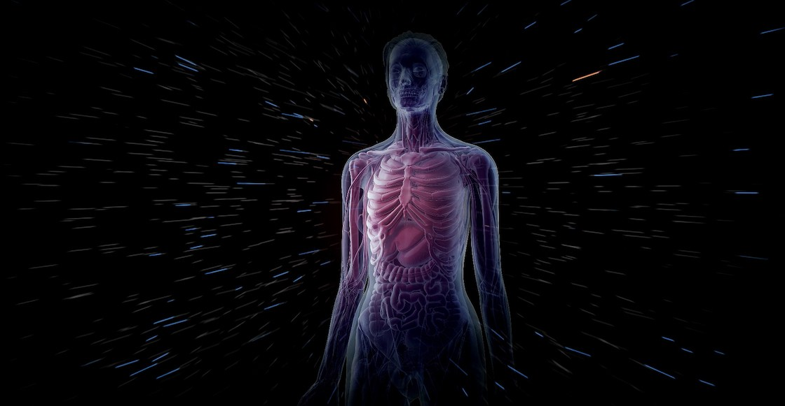

La lengua nunca descansa
La lengua se está moviendo todo el día. Se expande, se contrae, se aplana, se vuelve a contraer.
Al final del día, lo más probable es que la lengua haya hecho varios miles de movimientos.
Hola curiosos
Del polvo de tu casa eres "Culpable"
El polvo que vemos frente al resplandor que entra por la ventana, así como el que se acumula en el suelo o sobre los muebles, está compuesto en un 90% por células muertas de nuestro cuerpo.
Tu nariz recuerda hasta cuarentamil olores
Además, las mujeres huelen e identifican olores mejor que los hombres.
Cara ser humano tiene un olor distinto
Cada persona tiene su aroma único, debido a las feromonas. Excepto los gemelos idénticos, que tienen exactamente el mismo olor.
El calor del cuerpo es impresionante
En media hora, el cuerpo humano libera suficiente calor como para hervir casi medio litro de agua.
El calor sale por la cabeza
El 80% del calor del cuerpo sale por la cabeza.
Huellas digitales desde los tres meses
Un feto tiene huellas digitales después de 3 meses de su gestación.
Cerebro almacena terabytes
Se calcula que la capacidad del cerebro humano es mayor a cuatro terabytes.
Cuerpo humano mucho azufre
El cuerpo humano promedio contiene suficiente azufre para matar todas las pulgas de un perro de tamaño mediano.
El cuerpo humano puede crear 900 lapices
El cuerpo humano contiene tanto carbon para crear 900 lapices
Un ser humano puede llenar 50 botellas de agua

El cuerpo humano posee suficiente agua como para llenar 50 envases de un litro.
Un corazon humano puede bombear millones de litros
El corazon humano bombea 182 millones de litros de sangre en toda su vida.